CTV News at Noon
FLL World Class Kick-off and Training Event
Toronto Fire Services Open House
Meeting with Team AEMbots 4573
Bayview Glen School Open House
Westview Centennial Secondary School Regional FLL Qualifying Tournament
Presenting Our Research Project at a School Assembly
Demonstrating the Rhythm Ramp to Bayview Glen Fourth Grade Students
Sharing Our Rhythm Ramp Skit With Fellow Robotics Enthusiasts
Promoting FLL
Promoting FLL at the TIFF (Toronto International Film Festival) digiPlaySpace Exhibition
Sharing with Fellow FIRST Robotics Enthusiasts at the FRC Greater Toronto Central Regionals
Sharing Our Knowledge with the BVG Junior Robotics Club
Meeting with Team e-TAPE 4549
Sharing Online
Meeting with Prime Minister Stephen Harper
On December 4th, 2014, Prime Minister Stephen Harper visited the IBM Laboratories in Markham, ON to mark Canada’s achievements as a world leader in science and technology and to announce the federal government’s dedication to funding research and innovation in these fields. In attendance were Ed Holder, the Minister of State (Science and Technology), Paul Calandra, Parliamentary Secretary to the Prime Minister and for Intergovernmental Affairs, Joe Daniel, Member of Parliament for Don Valley East, John Carmichael, Member of Parliament for Don Valley West, the Deans from the U15, the top 15 Canadian Research Universities, and the Ctrl-Z Robotics Team. Ctrl-Z was invited to the event to represent FIRST Robotics Canada as well as to model student involvement in innovation and research ventures within the STEM (Science, Technology, Engineering, and Mathematics) fields. Once the Prime Minister finished his announcement, he spent some time with Ctrl-Z team members and inquired about their involvement in robotics and their interest in STEM. Ctrl-Z was especially surprised and excited when Stephen Harper asked them if he could operate one of our robots. After meeting with the Prime Minister, ‘sharing’ has taken on a whole new meaning for the team.
 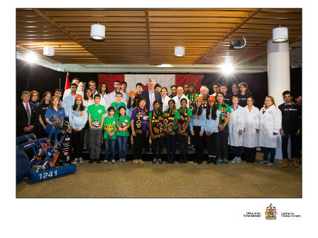
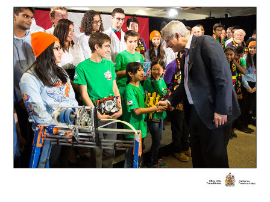
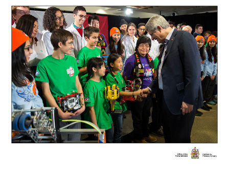
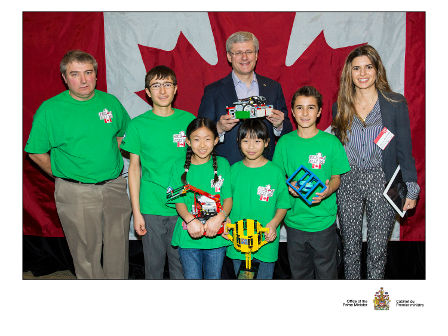
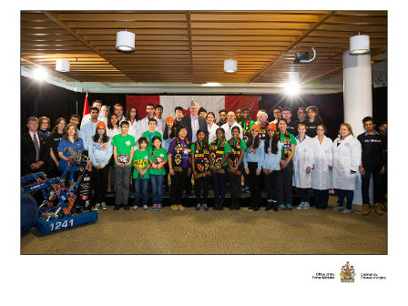
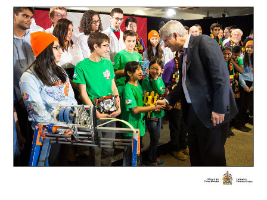
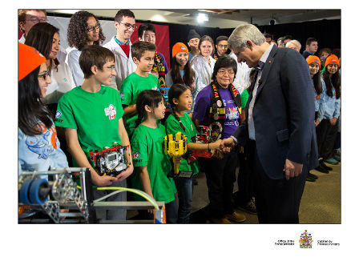
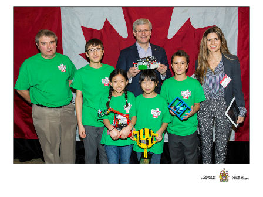
CTV News at Noon
On Friday, January 14th, 2015, our team was on a live broadcast for CTV News at Noon. We displayed FLL's core values while sharing our research project, robot, and cheer with about 100,000 Toronto Viewers. Anwar Knight, the host of the show, interviewed us about our Rhythm Ramp. Our robot even delivered to him the weather forecast on a sheet of paper!
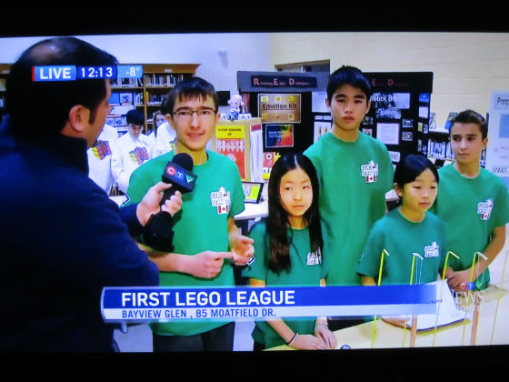 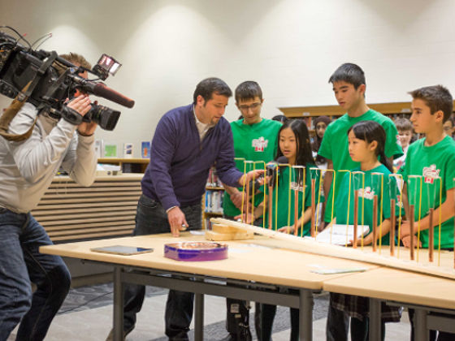
FLL World Class Kick-off and Training Event
On Saturday, September 27th, 2014, Ctrl-Z presented to many new and returning teams and over 300 attendees at FLL Ontario World Class Kick-off and Training Event hosted at Bayview Glen School. There, we refreshed and helped improve many enthusiasts building, programming, and presenting skills. We shared various concepts, from introductory to advanced, to help other teams make the best of this year’s season. Teams from as far away as Quebec attended the event.
 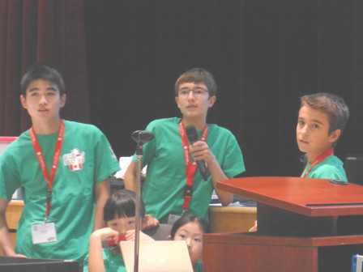
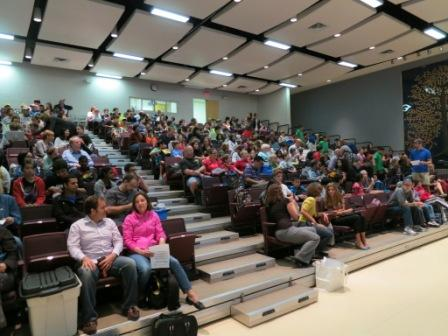
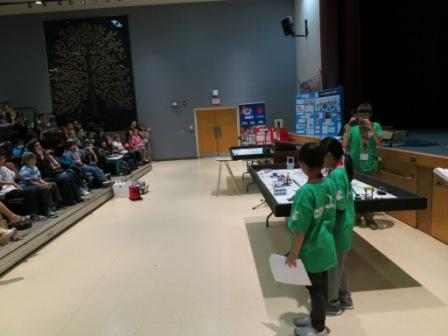
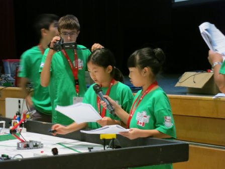
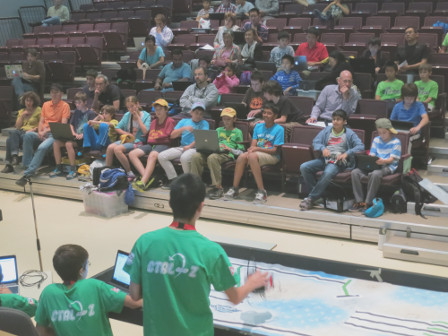
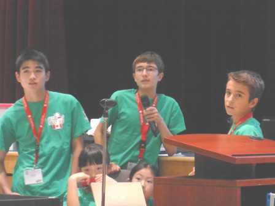
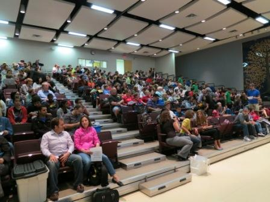
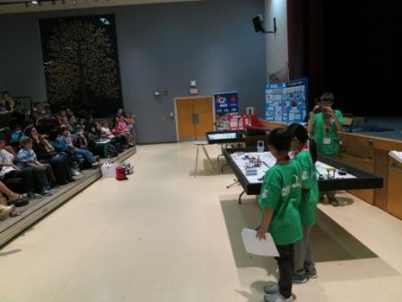
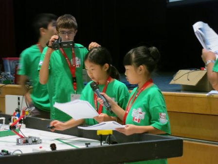
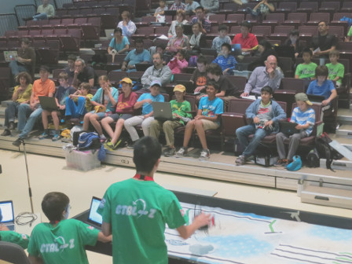
Toronto Fire Services Open House
On Saturday, October 4th, 2014, as part of Fire Prevention Week, Ctrl-Z was invited by the District
Chief of Public Education to promote FLL at the Toronto Fire Services annual open house
with more than 500 attendees. We presented our Nature's Fury research project.
Our innovative solution was a self-righting candle holder which help
prevent fires during natural disasters, like ice-storms. By presenting our robot and project,
as well as demonstrating the benefits of joining FLL, we impressed many firefighters and the general public.
Here is a
link
to the event at FIRST Robotics Canada's Facebook page.
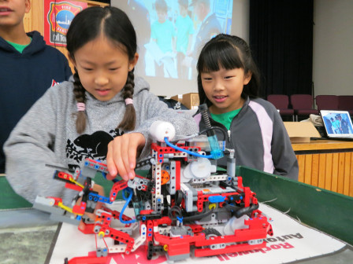 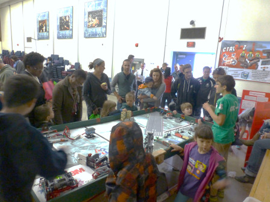 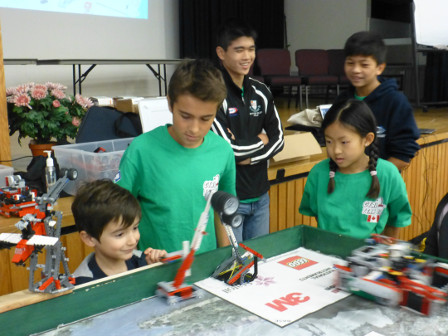 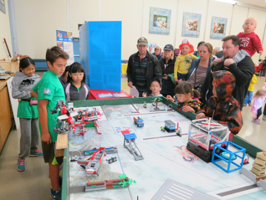 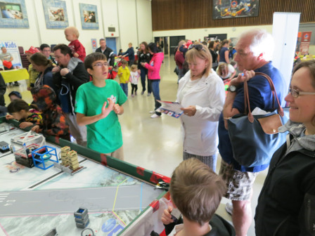 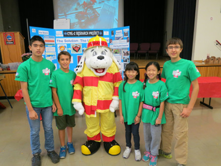 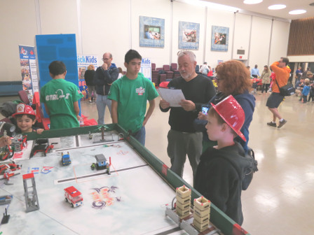 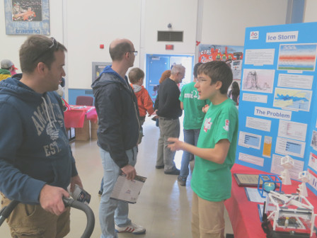 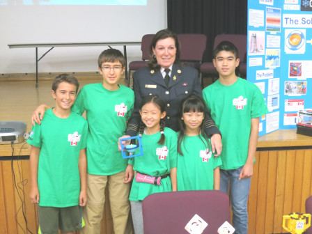 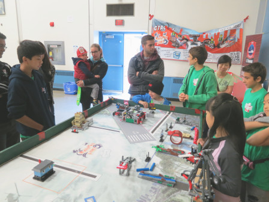 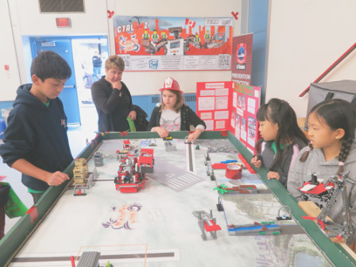
Meeting with Team AEMbots 4573
On Sunday, November 2nd, 2014, Ctrl-Z assisted Team AEMbots 4573, a rookie team. We invited AEMBots to our school and we shared insight on how they could improve their robot and learn new concepts in order to achieve more and take more away from their experience in FLL. It was great to meet and help a fellow team who is as interested in FLL as we are. Best of luck to the team.
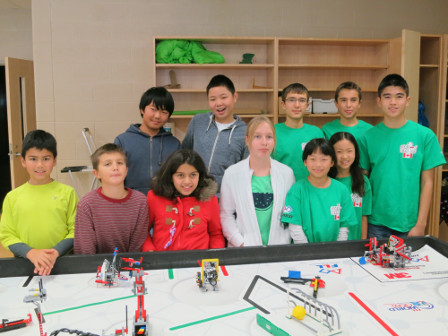 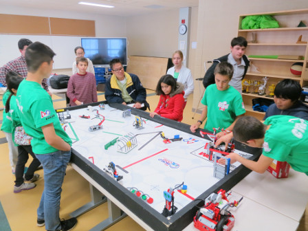 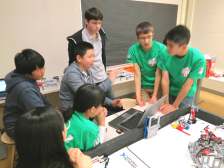
Bayview Glen School Open House
On Saturday, November 22nd, 2014, Ctrl-Z spent the morning talking about FLL, as well showing our robot and Rhythm Ramp to dozens of guests at Bayview Glen School’s open house. People were amazed at what we could accomplish as a team. Additionally, approximately 20 attendees of an educational conference visited us. We showed how much we have learned by participating in FLL.
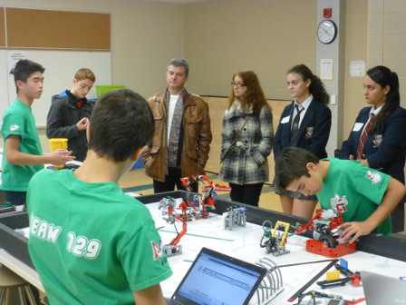 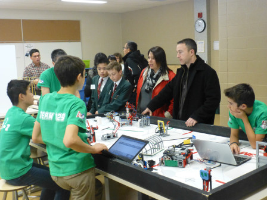 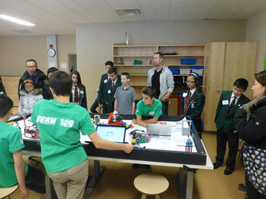 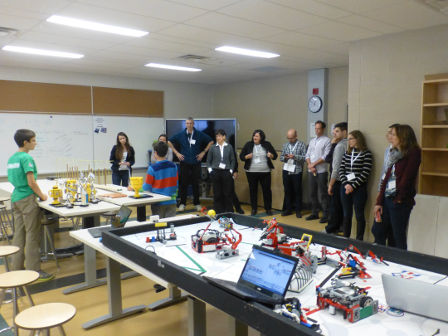 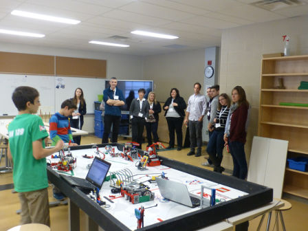
Westview Centennial Secondary School Regional FLL Qualifying Tournament
On Saturday, November 29th, 2014, Ctrl-Z volunteered at the Westview Centennial Secondary School regional qualifier. We served as score keepers, table reset volunteers, and referees. This not only enabled us to gain a better understanding of the rules, but also to appreciate the roles of volunteers at our upcoming tournament on December 13th. As well, it was another chance to give back to the FLL community that has done so much for us.
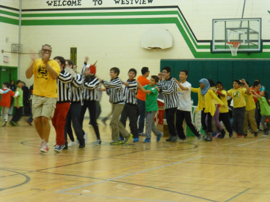 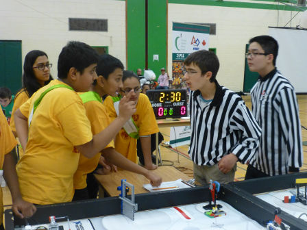 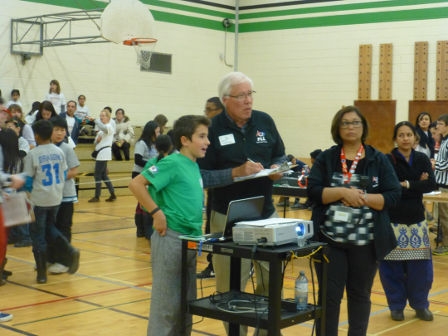 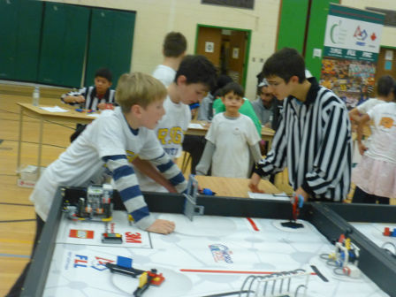 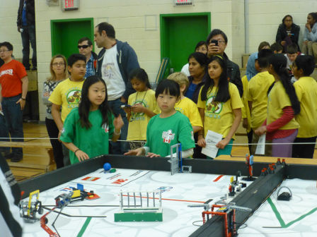 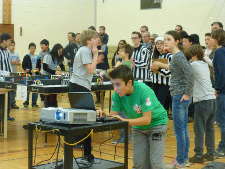 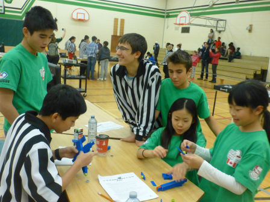 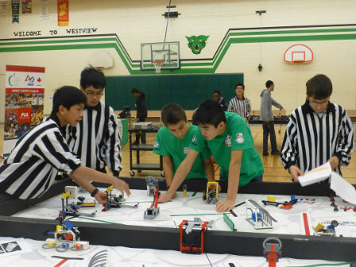 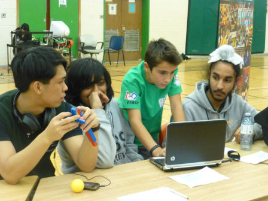
Presenting Our Research Project at a School Assembly
On Friday, December 12th, 2014, Ctrl-Z presented their research and innovative solution in front of 100 attendees from the Bayview Glen Middle School. The students were intrigued by our new approach to teaching music and couldn't wait to try out the Rhythm Ramp. We were asked interesting questions that showed the strengths of our invention, as well as what we still had to improve upon. It was really a great learning experience for both the audience and us.
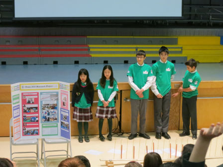 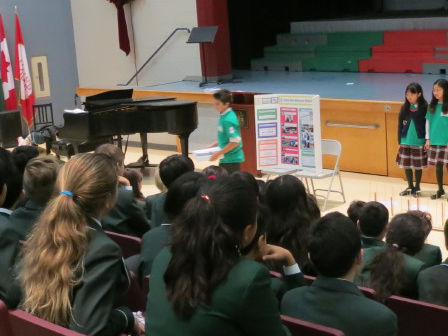 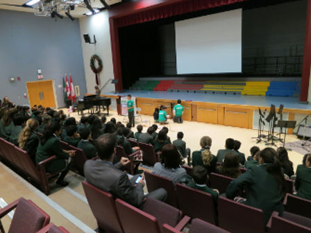 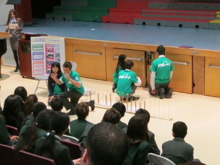 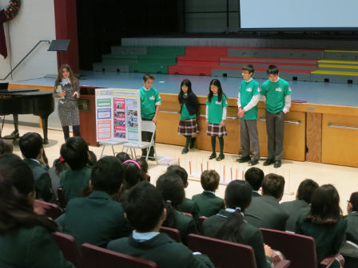 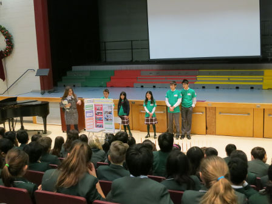
Demonstrating the Rhythm Ramp to Bayview Glen Fourth Grade Students
On Monday, January 10th, we did an experiment to test the effectiveness of our rhythm ramp musical tool when used by grade 4 children. We split a grade 4 class into two groups and performed a control test and actual experiment on each. For the control test, three children were selected to play a song from notes on a xylophone; recorded data included the number of times and amount of time it took to play the song right, as well as qualitative data. Afterwards, the entire group played a song on the Rhythm Ramp, and the same statistics were gathered. It was exciting to see how well the kids collaborated, and just how much they enjoyed it. In fact, one of the groups wanted to play more songs on the ramp after they had finished. As well, it was an effective learning tool; a child who had been there went home and easily played the songs on an instrument after hearing the ramp play them at school.
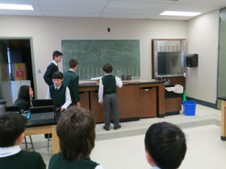 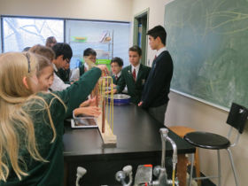 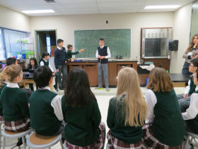 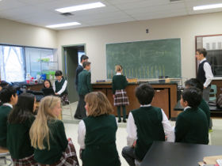 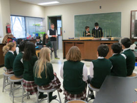
Sharing Our Rhythm Ramp Skit With Fellow Robotics Enthusiasts
On Saturday, January 17, 2015 at the FLL Ontario East Provincial Championships hosted by the University of Ontario Institute of Technology, the judges selected our team to perform its research project skit in front of about 750 FLL competitors, their families and friends, referees and other volunteers.
Promoting FLL
On Jan 17, 2015 at the Provincial Championships hosted by the University of Ontario Institute of Technology, we volunteered to say a few words about the merits of FLL Robotics for the cameras. Excerpts of our comments were included in promotional videos produced by FLL Ontario.
Promoting FLL at the TIFF (Toronto International Film Festival) digiPlaySpace Exhibition
The digiPlaySpace is an interactive exhibition located on
the ground floor of TIFF Bell Lightbox in Toronto from Mar 7 to
Apr 19, 2015. The 2015 exhibition features engaging interactive
fun stations created by some of the world's most innovative gaming,
robotics, artists and app developers. Team Ctrl-Z provided TIFF with
2 FLL base robots as well as our custom-designed interactive elevator
/roller coaster robot to display alongside a number of learning-centric games,
mobile apps, creative tools and production activities, all designed by acclaimed
children’s artists from around the world. With Ctrl-Z’s robots on display for an
estimated 15,000 to see, we are hopeful that children will be inspired to join FLL
and participate in the upcoming Trash Trek season. For more details concerning the
digiPlaySpace please click
here.
To see our interactive elevator/roller coaster robot, please click here.
Sharing with Fellow FIRST Robotics Enthusiasts at the FRC Greater Toronto Central Regionals
On Mar 7, 2015, Team Ctrl-Z was invited to the FRC Regional at Ryerson University, Toronto to be recognized as an Ontario representative at the upcoming FIRST Championships in St. Louis. At Ryerson, the Team shared its robot and research project with FRC competitors and judges and demonstrated the robot game in front of hundreds of enthusiasts to promote FLL in the Province.
Sharing Our Knowledge with the BVG Junior Robotics Club
Over the course of the school year, Team Ctrl-Z regularly presents robotics topics (from beginner to advanced programming to designing and building) to grade 4 to grade 6 prospective FLL participants. Doing so, encourages students to assess whether they are interested in FIRST and pursuing STEM. In prior years , Ctrl-Z's efforts with the Junior Robotics Club has helped motivate more than 25 students to participate in FLL.
Meeting with Team e-TAPE 4549
On Sunday, March 1st, 2015, Ctrl-Z met with FLL Team e-TAPE #4549, a second-year team. We invited them to our school and we shared insight on how they could improve their robot movements (focusing on our error corrected move block, state machine selection program and proportional integral derivative line following) and learn new concepts in order to achieve more and take more away from their experience in FLL. It was great to meet and help such an enthusiastic robotics team. Best of luck to Ethan, Peter, Adrian and Leon of Team e-TAPE!!!
Sharing Online
In February 2015, Ctrl-Z posted its innovative solution, the Rhythm Ramp, on the FLL Global Innovation website allowing many online viewers to learn more about the team's contribution to learning and education.